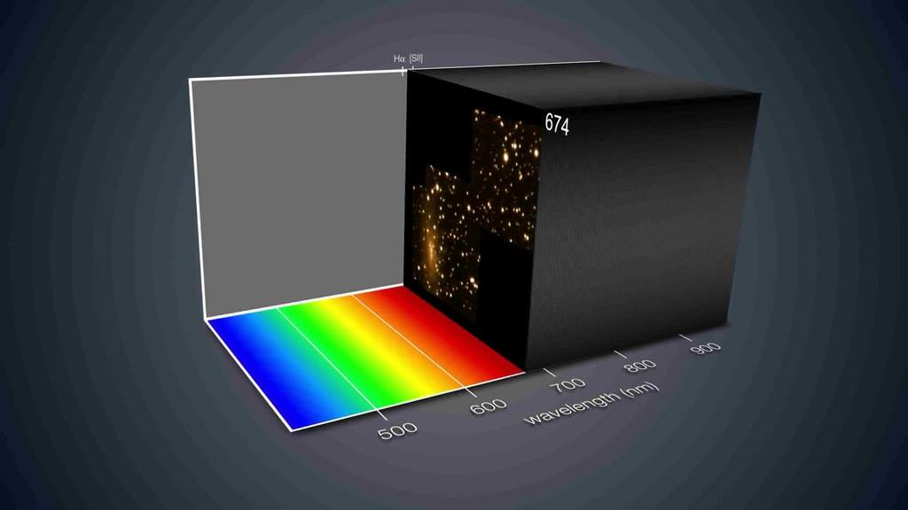

1. Focus demo ADASS XXVII¶
Multi Unit Spectroscopic Explorer (MUSE) is the first large integral field spectrograph ever installed at an 8-meter telescope (VLT). It uses 24 spectrographs to separate light into its component colors to create both images and spectra of its field of view, which has a size of ~1’x1’ spatially sampled at 0.2” per pixel. This implies ~90000 spectra obtained in a single exposure.
Integral field spectroscopy has demonstrated to be a powerful tool to study the physical properties of extended astronomical objects (e.g. kinematics and chemical distribution) or to search for extremely faint objects (e.g. with low continuum level but with emission lines), among others. We introduce here PyMUSE, which is a Python package designed to help the users in the task of perform a complete analysis to these information rich dataset. PyMUSE is optimized to extract 1-D spectra of arbitrary spatial regions within the cube and also for producing images using photometric filters and customized masks.
PyMUSE provides a set of potentially useful tools focused on versatility at the moment of extracting a spectrum or creating an image.
1.1. Initializing¶
Initializing is easy. You must be in “ipython –pylab” enviroment.:
from PyMUSE.musecube import MuseCube
cube = MuseCube('example_cube.fits', 'example_white.fits')
If for any reason you do not have the original white image you can still initialize a MuseCube:
cube_ = MuseCube('example_cube.fits')
This will create a new white image by collapsing the wavelength axis of the cube.
1.2. Extraction of a spectrum¶
The simplest case is the extraction of an arbitrarily defined circular region:
spec = cube.get_spec_from_ellipse_params(137,56,10,color='Blue')
This spec are XSpectrum1D from linetools package (https://github.com/linetools/linetools). Its main attributes are
spec.wavelength, spec.flux and spec.sig (although XSpectrum1D objects include a lot of extra features).
Of course, the region can be defined by a set of elliptical parameters [a,b,theta] instead of a single radius:
spec = cube.get_spec_from_ellipse_params(137,56,[10,5,45],color='green')
And the regions can also be declared in degrees:
spec = cube.get_spec_from_ellipse_params(212.6656,23.0744,[0.0005,0.00025,-45],coord_system='wcs',color='red')
The apertures of extraction can also be defined by a DS9 region string:
spec = cube.get_spec_from_region_string('physical;ellipse(137,56,10,5,45) # color = cyan')
And even from a DS9 region file:
spec=cube.get_spec_from_ds9regfile('example.reg',i=0)
spec=cube.get_spec_from_ds9regfile('example.reg',i=1)
spec=cube.get_spec_from_ds9regfile('example.reg',i=2)
Some extra features regarding the spectrum extraction are:
spec= cube.get_spec_and_image((137,56),halfsize=12)
That returns not only the 1-D spectrum but also the 2-D image of the selected source, and if you initialized in "--pylab qt enviroment" you are able to interactively define a polygonal region::
spec = cube.get_spec_from_interactive_polygon_region()
1.2.1. Modes of extraction¶
Once the aperture of extraction is defined, the combination of the spaxels inside it to calculate the total flux per wavelength bin can be done in a variety of manners:
ivar- Inverse variance weighting, variance is taken only spatially, from a “white variance” images.
sum- Sum of total flux.
gaussian- Weighted mean. Weights are obtained from a 2D gaussian fit of the bright profile.
wwm- ‘White Weighted Mean’. Weighted mean, weights are obtained from the white image, optionally smoothed using a gaussian filter.
ivarwv- Weighted mean, the weight of every pixel is given by the inverse of it’s variance.
mean- Mean of the total flux.
median- Median of the total flux.
wwm_ivarwv- Weights given by both,ivarwvandwwm.
wwm_ivar- Weights given by both,wwmandivar.
wfrac- It only takes the fractionfracof brightest spaxels (white) in the region(e.g. frac=0.1 means 10% brightest) with equal weights.
- Example of
wfracusage:: - spec = cube.get_spec_from_ellipse_params(137,56,10,frac=0.1,mode=”wfrac”)
1.3. Imaging¶
PyMUSE also offer to the users a set of features to produce different types of images.
Masking images is possible, just define a DS9 region file with the region that you want to mask out:
cube.get_image(wv_input=cube.wavelength,maskfile='example2.reg',save=True,inverse_mask=False)
Or mask in:
cube.get_image(wv_input=cube.wavelength,maskfile='example2.reg',save=True,inverse_mask=True)
The parameter wv_input can be either an iterable that contains the wavelengths that you want to collapse or a wavelength range:
cube.get_image(wv_input=[[4750,6000]],maskfile='example2.reg',save=True,inverse_mask=False)
Filtered images are also supported. PyMUSE has the feature of convolve the MUSE datacube with photometric filters (SDSS and Johnson filters are available) Given the MUSE wavelength range PyMUSE can create r,i,R,V images:
cube.get_filtered_image(_filter='r', custom_filter=None)
You can also define your own filter, for example if we define a Gaussian transmission curve:
import numpy as np
from astropy.modeling import models
Gauss=models.Gaussian1D(mean=5400,stddev=200,amplitude=1)
w=np.arange(5000,6000,1)
tc=Gauss(w)
plt.figure()
plt.plot(w,tc)
We can use:
cube.get_filtered_image(custom_filter=[w,tc])
To create the new image.
To get an smoothed image, the method:
cube.get_smoothed_white(npix=1, show = True)
will create a new smoothed white image. The smooth is done by a Gaussian filter with standard deviation given by npix.
Finally, to collapse a set of wavelength ranges:
cube.get_image_wv_ranges(wv_ranges=[[5100,5200],[5400,5500]],substract_cont=False, save=True)
This will create an image collapsing only the wavelength slices that are contained in [5100,5200] or in [5400,5500]
The option substract_cont can be useful to detect emission-line galaxies. For example if we come back to the spectrum defined above:
spec=cube.get_spec_from_ds9regfile('example.reg',i=2)
It has an strong emission line between 5280 and 5300 Angstroms.
If we get the image of that wavelength range:
cube.get_image_wv_ranges([[5280,5300]],save=True,substract_cont=False)
The galaxy is there. However there are a lot of extra sources that may not have an emission line. If we use now:
cube.get_image_wv_ranges([[5280,5300]],save=True,substract_cont=True)
There is the galaxy!
As you can see, there is another object at nearly (36,61) in the image. If we extract its spectrum:
spec = cube.get_spec_from_ellipse_params(36,61,4)
We’ll find another emission line galaxy with an emission line around the same wavelength. In this context, the function:
ranges=cube.create_ranges(z=0,width=30)
that defines the wavelength ranges for Ha, Hb, OII, OIII at a given redshift can be useful to search for emission-line galaxies.
1.4. External software compatibilities¶
To perform a systematic analysis, PyMUSE is intended to be used with external, commonly used software.
1.4.1. SExtractor¶
As you may know, SExtractor is a program that builds a catalogue of objects from an astronomical image. The user can run SExtractor on the white image (or on a photometric image built as explained above) to build a catalogue of sources in the field and use this catalogue as an input for PyMUSE to show the regions and extract the corresponding spectra.
if you already generated a catalogue, use:
cube.plot_sextractor_regions('example.cat')
to plot them and:
cube.save_sextractor_specs(mode='wwm')
for saving them to the hard drive.
This can still be done if the user used SExtractor on a totally different image (of course the astrometry between the MUSE cube and the external image should be consistent, otherwise the regions defined by SExtractor will be shifted respect to the data cube)
1.4.2. DS9 catalogue¶
Some source detection algorithms create an output catalogue defined as a DS9 region file. A DS9 catalogue can also be used as an input for PyMUSE to systematically extract the corresponding spectra by doing this:
cube.save_ds9regfile_specs('example.reg')
To name the saved spectra according to their coordinates:
cube.save_ds9regfile_specs('example.reg',coord_name=True)
1.4.3. Redmonster¶
As you may have noticed, all the saved spectra by default are named as “_RMF.fits”. This is because they are automatically saved in a readable format for redmonster. The redmonster software is a sophisticated and flexible set of Python utilities for redshift measurement, and classification of 1-D spectra.
To access them use:
import PyMUSE.utils as mcu
wv,fl,sig=mcu.get_rm_spec('001_example_RMF.fits')